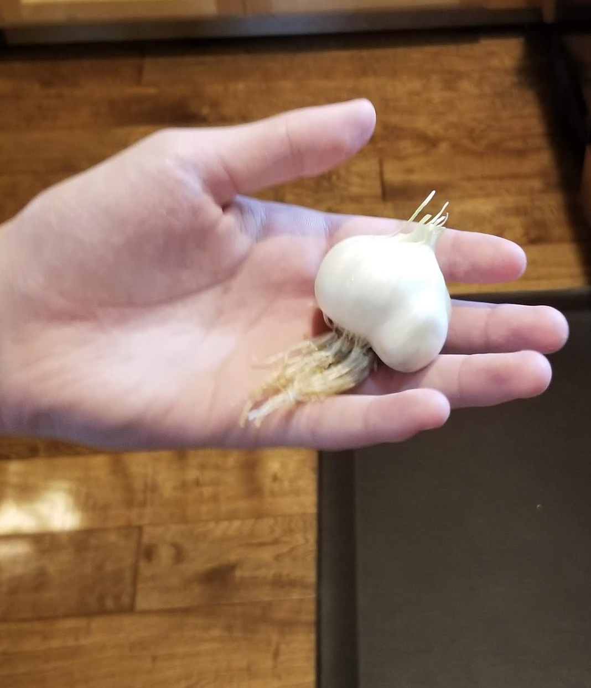

2020년이 이제 며칠 남지 않아서 남은 시간동안 창작열을 불태우기로 했다. 몇년간 12월에는 그해의 가족사진을 이용해 다음연도 달력을 만들며 즐거워했는데, 애들이 커가면서 점점 사진찍히는 것을 싫어하게 되서 올해부터는 달력만들기를 그만 두기로 했다... 뭐를 할까 잠시 방황하다가 2020년에 우리가 꽂힌 것들을 모아보고자 한다.

토마토 지지대 만드는 중
한해 농사를 준비중인 우리집 농부

토마토 지지대 만드는 중
여름내내 토마토가 많이 열렸는데 깜박하고 사진을 안찍음. 이런..

방울토마토와 깻잎
수확물

토마토와 오이
토마토는 잘 자랐는데 오이는 별로... 너무 물기가 없음

파프리카
마트에서 사온 파프리카를 먹고 씨를 긁어 뿌렸더니 자라서 열매가 꽤 열렸다.

마늘
soft neck품종이라 마늘쫑은 없었으나 마늘은 몇개 건짐